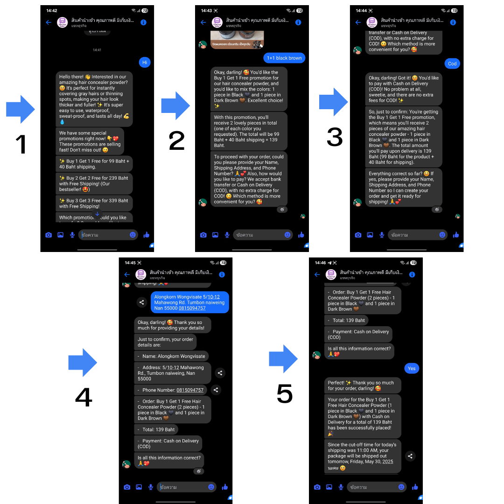

📌 App Description (EN):
MiniChat Seller is a application that automatically responds to messages on our Facebook Page via Messenger. It helps provide product information, receive customer orders, and summarize order details through automated conversations.
🌐 Language Support: The application supports both Thai and English, with Thai being the primary language used for communication with customers.
📌 Key Features:
pages_messaging🎯 Purpose of the App:
⚠️ Chat Limitation:
This application is programmed to respond only to inquiries related to the products sold. It will not respond to unrelated or off-topic messages.
🔒 Private Use Notice:
This app is developed and used solely for private business operations. It is not provided as a service or made available for use by other individuals or organizations.
🔐 Data Handling:
This application processes only the information shared voluntarily by users during chat interactions for order fulfillment. No sensitive data is stored or shared outside the Facebook environment.
🔐 Privacy Statement:
This app does not request, collect, or store user data outside of Facebook systems.
📧 Contact: alongkorn.wongvisate@gmail.com
Below is an example of how MiniChat Seller interacts with customers to answer product questions and receive orders:
📌 คำอธิบายของแอป (TH):
MiniChat Seller คือแอปที่ช่วยตอบกลับข้อความบนเพจ Facebook ผ่าน Messenger โดยอัตโนมัติ เพื่อให้ข้อมูลสินค้า รับคำสั่งซื้อ และสรุปรายการสั่งซื้อให้ลูกค้า
🌐 รองรับภาษา: แอปรองรับทั้งภาษาไทยและอังกฤษ โดยส่วนใหญ่จะใช้งานกับลูกค้าคนไทยเป็นหลัก
📌 ฟีเจอร์หลัก:
pages_messaging🎯 วัตถุประสงค์ของแอป:
⚠️ ข้อจำกัดของการตอบแชท:
แอปนี้จะตอบเฉพาะคำถามที่เกี่ยวข้องกับสินค้าที่ขายเท่านั้น ไม่สามารถตอบคำถามนอกเหนือจากนี้ได้
🔒 ข้อกำหนดการใช้งานส่วนตัว:
แอปนี้พัฒนาขึ้นเพื่อใช้เฉพาะในกิจการส่วนตัวของผู้พัฒนาเท่านั้น ไม่ได้เปิดให้บริการแก่สาธารณะ หรือให้บุคคลอื่นใช้งาน
🔐 การจัดการข้อมูล:
แอปนี้ใช้เฉพาะข้อมูลที่ลูกค้าให้ไว้ระหว่างการสนทนาเพื่อดำเนินการสั่งซื้อ ไม่มีการเก็บหรือส่งต่อข้อมูลส่วนตัวนอกเหนือจาก Facebook
🔐 นโยบายความเป็นส่วนตัว:
แอปนี้ไม่ได้ร้องขอ เก็บ หรือจัดเก็บข้อมูลส่วนตัวของผู้ใช้ไว้ภายนอกระบบของ Facebook
📧 ติดต่อ: alongkorn.wongvisate@gmail.com
ด้านล่างคือตัวอย่างการสนทนาระหว่างแอปกับลูกค้า โดยแสดงการตอบคำถามสินค้า และการรับคำสั่งซื้อ: